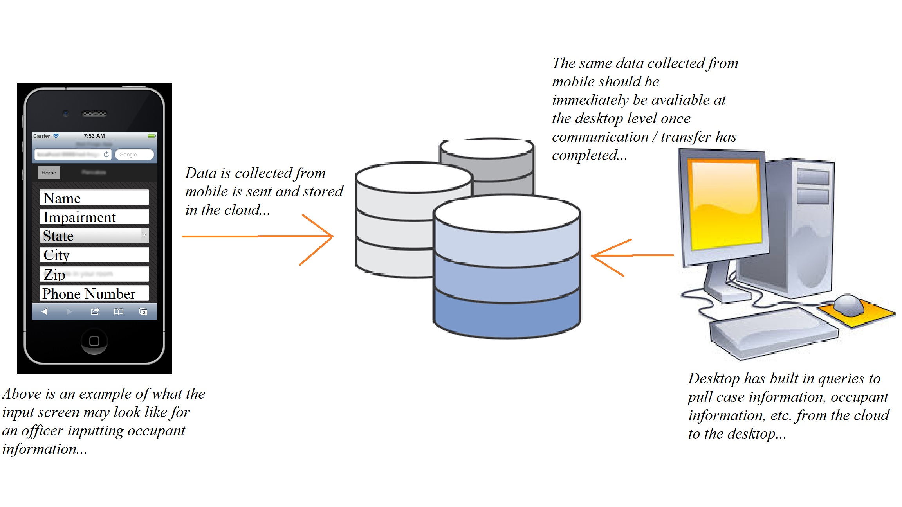

To unit test the cloud database and its schema the database can be built in myUK MySQL database or in another third party RDBMS software such as MySQL (which is free and open-source!). By doing this, the team can unit test our database and its schema independent of the mobile and desktop teams as the applications they are developing will be the actual processes storing and retrieving information to and from the database. This allows us to develop queries to be used by them that are needed for the work these applications do. Therefore, our team does not have to wait on these teams to develop their user-interfaces and front-in portions of apps to test. When these applications are ready to begin testing database connectivity and querying, we then supply our results to them having confidence that they work and pull / push the correct data.
The MySQL commands to build the database and its schema in myUK or another open-source DBMS software can be found at the following link: Commands
After building the database and its tables you can then run the following commands to insert "test" data into the tables to run queries on the database and test its capabilities: Commands
After inserting the "test" data into the database the following commands can be run to query the database and ensure the schema is correct: Commands
Note that the above are basic queries to ensure the database tables are set up correctly, "test" data has been inserted into them, and that functionality is good. As the mobile and desktop applications are further developed more advanced queries will be designed to process the necessary data needed for these applications to function.
To do the integr
To do the system testing the AWS cloud relational database must be used versus the test database on myUK. This is required as the overall system of our project consists of the cloud database, the mobile application, and the desktop application. To do the system test the SQL queries developed in the integration / function testing portion must be coded into the mobile and desktop application backgrounds. This is required because the user will cause these queries to be processed by writing data to the cloud from the mobile side or pulling data down from the cloud from the desktop side.
To test the queries developed in the integration / function sections for the mobile application system a user must be able to input information about the vehicle, occupants, case, etc. into a sheet. The user should then be able to send this data from the scene to the cloud with the simple push of a button. To test the system either the cloud should be analyzed to ensure it now contains this information. This can also be done by using the desktop application to pull down the corresponding case files and examine it to ensure all data was stored correctly and can be accesses. In other words, if the queries tested in the integration / function section work correctly on the test database, they should work on our cloud database if proper communication between the cloud, desktop, and mobile applications all work.
The following diagram shows how the entire system should be tested for proper execution. Note that this diagram applies to each of the queries developed in the integration / function testing section as well as potential future queries needed for mobile or desktop.
In other words, to system test our queries from the integration / function testing section should be built in to the mobile and desktop applications. These applications can then be used to send and retrieve information from the cloud database. If mobile can send data to the database and desktop can then pull that data down into the CAD program, then our system should work correctly as the queries themselves have already been tested in the integration / function testing section. So basically, this level of testing is ensuring communication works and that data can be transmitted accurately between mobile, the cloud, and desktop.